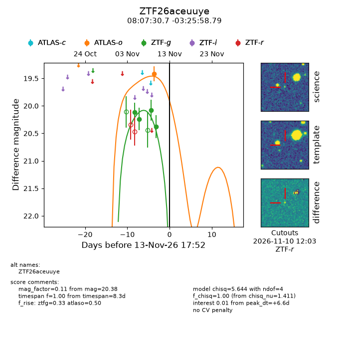
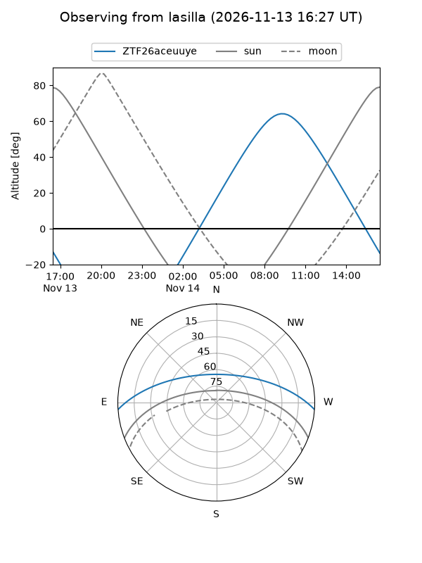
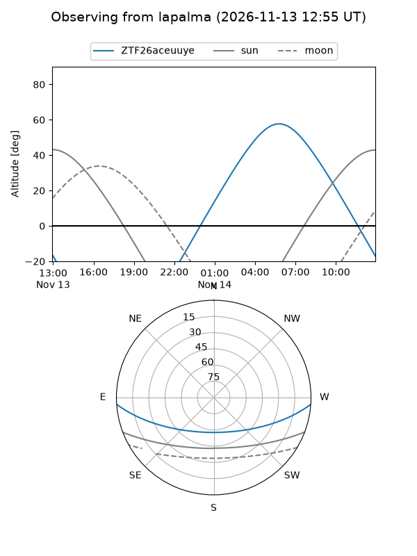
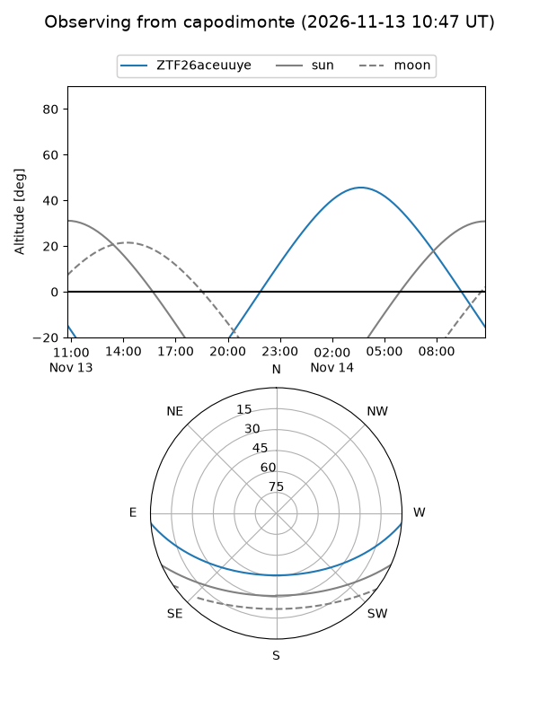
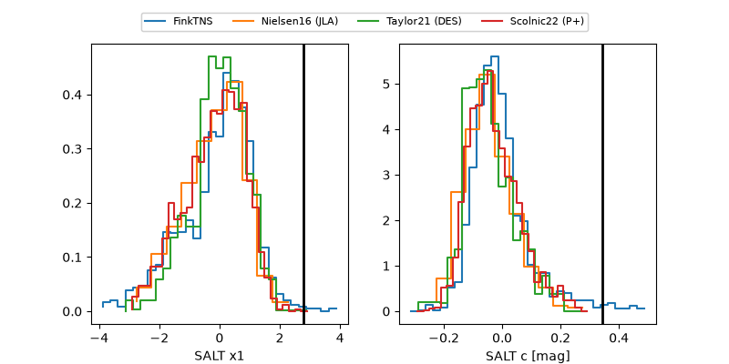

ZTF26aceuuye
Target ZTF26aceuuye at 2026-11-13 17:58
Aliases and brokers:
FINK-ZTF: ztf.fink-portal.org/ZTF26aceuuye
Lasair-ZTF: lasair-ztf.lsst.ac.uk/objects/ZTF26aceuuye
ALeRCE-ZTF: alerce.online/object/ZTF26aceuuye
Direct TNS query: direct search
alt names
ZTF26aceuuye (ztf,fink_ztf)
Coordinates:
equatorial (ra, dec) = 121.8780,-3.43300
equatorial (HMS+DMS) = 08:07:30.73,-03:25:58.79
galactic (l, b) = (224.9916,+15.20059)
Flags:
peak dt: +6.6
Photometry:
last atlaso=19.42, ztfg=20.38
1 atlaso, 4 ztfg detections
Lightcurve

Visibility



Additional plots
